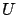
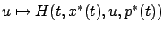
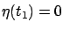
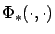
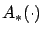
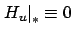

The variational approach presented in Sections 3.4.1-3.4.3 has led us, quite quickly, to the necessary conditions for optimality expressed by the canonical equations and the Hamiltonian maximization property (we did not actually prove the latter property, but we will see that it is indeed correct). While it helps us build intuition for what the correct statement of the maximum principle should look like, the variational approach has several limitations which, upon closer inspection, turn out to be quite severe.
CONTROL SET. Recall that our starting point was to
consider perturbed controls of the form (3.24). Such
perturbations make sense when the values of  are interior
points of the control set
are interior
points of the control set

. This may not be the case, though, if has a boundary, and bounded (or even finite) control sets are common in control applications. As we will see in the next chapter, the statement that the function
must have a maximum at
FINAL STATE. In the preceding we treated the case
when the final state  is free, but
we know (see Section 3.3.3) that in general
we may have some target set
is free, but
we know (see Section 3.3.3) that in general
we may have some target set  . Consider, for example,
the case of a fixed endpoint:
. Consider, for example,
the case of a fixed endpoint:
 .
Then
the control perturbation
.
Then
the control perturbation  is no longer arbitrary, since the resulting
state perturbation
is no longer arbitrary, since the resulting
state perturbation  must satisfy
must satisfy

. In view of the fact that

where

is the transition matrix for
in (3.28). The second equation in (3.38) needs to hold only for admissible perturbations, and not for all
. We see that the prospects of extending the variational approach beyond free-endpoint problems do not look very promising.
DIFFERENTIABILITY. When developing the first
variation, we were tacitly
assuming that  is differentiable with respect to
is differentiable with respect to  (as well as
(as well as  ). Since the Hamiltonian
). Since the Hamiltonian
 is defined via (3.29), both
is defined via (3.29), both  and
and  must thus
be differentiable with respect to
must thus
be differentiable with respect to  . The reader can readily check that
differentiability of
. The reader can readily check that
differentiability of  with respect to
with respect to  was not
one of the assumptions we made in Section 3.3.1 to ensure
existence
and uniqueness of solutions for our control system. In other words,
the variational approach requires extra regularity
assumptions to be imposed on the system.
Having to assume differentiability of
was not
one of the assumptions we made in Section 3.3.1 to ensure
existence
and uniqueness of solutions for our control system. In other words,
the variational approach requires extra regularity
assumptions to be imposed on the system.
Having to assume differentiability of  with respect to
with respect to  is also undesirable, as
it rules out otherwise quite reasonable cost functionals like
is also undesirable, as
it rules out otherwise quite reasonable cost functionals like
 Furthermore, the analysis based on the second variation--which
is needed to distinguish between a minimum and a
maximum--involves second-order partial derivatives
of
Furthermore, the analysis based on the second variation--which
is needed to distinguish between a minimum and a
maximum--involves second-order partial derivatives
of  with respect to
with respect to  . It is clear that the variational
approach would take us on a path of overly restrictive regularity assumptions.
Instead, we would like
to establish the Hamiltonian maximization property more directly, not by
working with derivatives.
. It is clear that the variational
approach would take us on a path of overly restrictive regularity assumptions.
Instead, we would like
to establish the Hamiltonian maximization property more directly, not by
working with derivatives.
CONTROL PERTURBATIONS. When considering the control
and state perturbations as in (3.24)
and (3.25) with  near 0, we are allowing only
small deviations in both
near 0, we are allowing only
small deviations in both  and
and  . For the system
. For the system  , this would correspond exactly to the
notion of a weak minimum from calculus of variations. However, as we
already discussed as early as Section 2.2.1 (see in
particular Example 2.1), we would like to have a
larger family of control perturbations. More precisely, we want to
capture optimality with respect to control perturbations that may be large,
as long as the corresponding state trajectories are close to the
given one. For example, Figure 3.6 illustrates a
particular control perturbation (for controls that switch between
only two values) which is very reasonable but falls outside the
scope of the variational approach. As we will soon see, working
with a richer perturbation family is crucial for obtaining sharper
necessary conditions for optimality.
, this would correspond exactly to the
notion of a weak minimum from calculus of variations. However, as we
already discussed as early as Section 2.2.1 (see in
particular Example 2.1), we would like to have a
larger family of control perturbations. More precisely, we want to
capture optimality with respect to control perturbations that may be large,
as long as the corresponding state trajectories are close to the
given one. For example, Figure 3.6 illustrates a
particular control perturbation (for controls that switch between
only two values) which is very reasonable but falls outside the
scope of the variational approach. As we will soon see, working
with a richer perturbation family is crucial for obtaining sharper
necessary conditions for optimality.
In summary, while the basic form of the necessary conditions provided by the maximum principle will be similar to what we obtained using the variational approach, several shortcomings of the variational approach must be overcome in order to obtain a more satisfactory result. Specifically, we need to accommodate constraints on the control set, constraints on the final state, and weaker differentiability assumptions. A less restrictive notion of ``closeness" of controls will be the key to achieving these goals. Borrowing a colorful expression from [PB94], we can describe the task ahead of us as ``the cutting of the umbilical cord between the calculus of variations and optimal control theory." The maximum principle is a very nontrivial extension of the variational approach, and was developed many years later. The proof of the maximum principle is quite different from the argument given in this section; in particular, it is much more geometric in nature. We are now ready, in terms of both technical preparation and conceptual motivation, to tackle this proof in the next chapter.